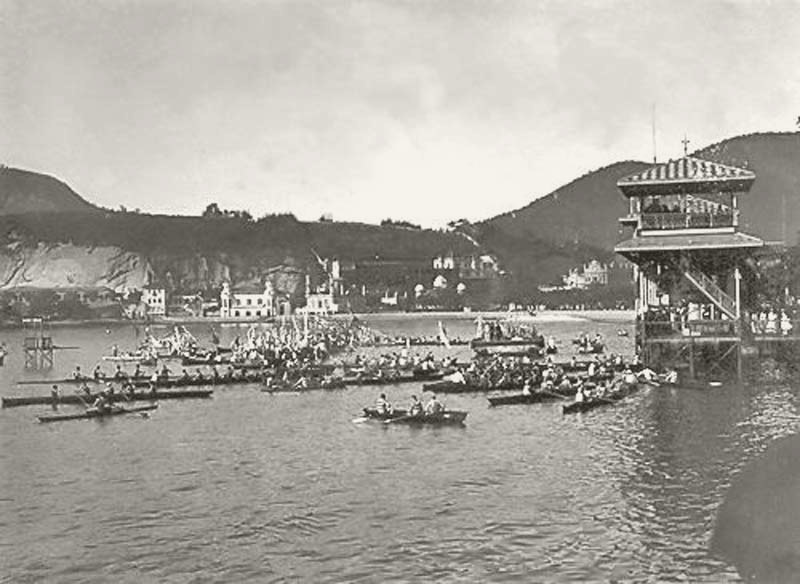
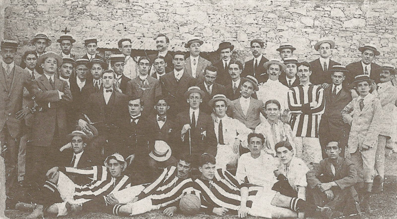

CLUB DE REGATAS BOTAFOGO
No dia 1º de julho de 1894, nascia na praia de Botafogo o CLUB DE REGATAS BOTAFOGO. O clube ganhou esse nome em homenagem à enseada do bairro onde competiam os seus barcos. A sede era em um casarão, demolido, no sul da praia de Botafogo, encostado ao Morro do Pasmado, onde hoje termina a Avenida Pasteur. Em 1899, surgiu uma lenda nas águas da Baía de Guanabara, a embarcação botafoguense Diva, que venceu todas as 22 regatas que disputou, sagrando-se campeã carioca. Em razão desse título, o Botafogo é o único clube do Brasil campeão de três séculos.
O Club de Regatas Botafogo foi o primeiro clube carioca campeão brasileiro de alguma modalidade esportiva: de remo, em campeonato realizado no Rio de Janeiro em outubro de 1902, com a vitória do atleta Antônio Mendes de Oliveira Castro, que anos mais tarde viria a se tornar presidente do clube.
Os fundadores do Club de Regatas Botafogo: Alberto Lisboa da Cunha, Arnaldo Pereira Braga, Arthur Galvão, Augusto Martins, Carlos de Souza Freire, Eduardo Fonseca, Frederico Lorena, Henrique Jacutinga, João Penaforte, João Teixeira, José Maria Dias Braga, Julio Kreisler, Julio Ribas Junior, Luís Fonseca Quintanilha Jordão, Oscar Lisboa da Cunha e Paulo Ernesto de Azevedo.
BOTAFOGO FOOTBALL CLUB
No ano de 1904, surgia no bairro de Botafogo um novo clube de futebol, o Electro Club, primeiro nome dado ao Botafogo Football Club. A associação nasceu de uma conversa entre dois amigos durante uma aula. Flávio Ramos e Emmanuel Sodré estudavam no colégio Alfredo Gomes e, durante uma aula de álgebra, nascia a primeira ideia de fundar um clube, através de um bilhete passado por Flávio a Emmanuel, que dizia: "O Ithamar tem um clube de football na Rua Martins Ferreira. Vamos fundar outro no Largo dos Leões? Podemos falar aos Werneck, ao Arthur César, ao Vicente e ao Jacques". E assim tudo começou.
Esse bilhete foi interceptado pelo professor de matemática, general Júlio Noronha, que advertiu não ser aquele o momento mais apropriado para conversas daquele tipo, ressaltando, porém, que apoiava qualquer ideia relativa à prática de esportes. Estava dado então o primeiro passo para o nascimento do Glorioso".
Naquela mesma noite, Flávio Ramos conversou com Octávio Werneck, na Rua Voluntários da Pátria, e o convidou para criarem o novo clube. Finalmente, na tarde de 12 de agosto de 1904, o clube seria formado por um grupo de colegiais com idades entre 14 e 15 anos, no chalé de um velho casarão em ruínas da Rua Conselheiro Gonzaga, esquina da Rua Humaitá com Largo dos Leões, gentilmente cedido aos garotos por Dona Chiquitota, avó materna de Flávio, grande amiga e verdadeira mãe do clube que estava nascendo."
Os meninos, que residiam no bairro de Botafogo, reuniram-se com os outros amigos em um casarão no Largo dos Leões para fundar o Electro Club. Esse foi o primeiro nome dado ao Botafogo, pois os meninos decidiram cobrar mensalidade e acharam um talão de um extinto clube com esse nome, que resolveram então adotar. Mas o Electro Club só durou até o dia 18 de setembro, quando foi feita outra reunião na casa da avó de Flávio, Dona Chiquitota, que se assustou ao saber o nome do clube e então argumentou: "Ora, morando onde vocês moram, o clube só pode se chamar Botafogo", aconselhou Dona Chiquitota. E assim foi feito. O clube então passou a se chamar Botafogo Football Club.
O primeiro amistoso ocorreu no dia 2 de outubro de 1904, contra o Football and Athletic Club, na Tijuca: derrota por 3 x 0. A primeira vitória viria no segundo jogo, em 21 de maio de 1905, sobre o Petropolitano, 1 a 0, gol de Flávio Ramos. Em 1906, o time participou do primeiro Campeonato Carioca e tornou-se o primeiro campeão da cidade, eis que, levantou o título dos 2ºs. times, conquistando a Taça Caxambu, antes que chegasse ao fim o certame dos 1ºs. times. No ano seguinte, terminou empatado com o Fluminense, sagrando-se campeão, em título reconhecido apenas em 1996.
O primeiro Campeonato Carioca conquistado e comemorado imediatamente após o apito final foi em 1910. Com uma campanha irrepreensível, marcada por sete goleadas, o clube não apenas foi campeão como ganhou o apelido de Glorioso. Dois anos mais tarde, novo título carioca.
Na década de 30, outra época gloriosa. O time conquistou o tetracampeonato carioca, de 1932 a 1935, feito inédito no Rio de Janeiro. Assim nascia o Botafogo Football Club, que depois de trinta e oito anos de existência uniu-se ao outro Botafogo, o de Regatas, dando início ao Botafogo de futebol e Regatas.
Fundadores: Álvaro Werneck, Arthur Cesar de Andrade, Augusto Paranhos Fontenele, Basílio Viana Junior, Carlos Bastos Neto, Emanuel de Almeida Sodré, Eurico Viveiros de Castro, Flávio da Silva Ramos, Itamar Tavares, Jacques Raimundo Ferreira da Silva, Lourival Costa, Octávio Werneck, Vicente Licínio Cardoso.